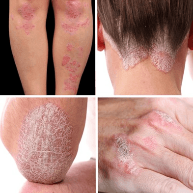
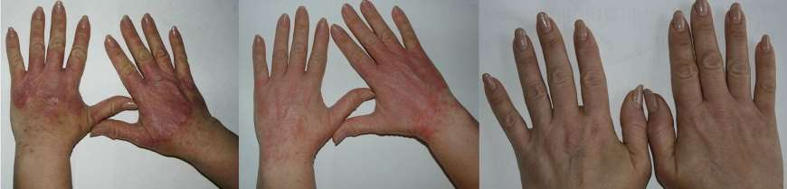

Descoperire revoluționară! Spune NU psoriazisului chiar acum!
Psoriazisul este o boală a pielii destul de frecventă, pe care mulţi nu ştiu să o recunoască. Ea determină o creștere exagerată a celulelor pielii , având ca rezultat apariția unor plăci tegumentare îngroșate, albicioase . Aceste leziuni pot varia ca dimensiuni și au o localizare preponderent la nivelul genunchilor, coatelor, scalpului, mâinilor, picioarelor și regiunii sacrale (partea inferioară a spatelui).
Se manifestă prin cruste lucioase subțiri sau îngroșate, mâncărime la nivelul leziunilor, unghii îngroșate, crăpate , la unele cazuri. Psoriazisul este mai frecvent în rândul adulților, dar poate apărea și în rândul copiilor și adolescenților. Potrivit statisticilor, aproape 30% dintre persoanele diagnosticate cu psoriazis au o rudă de gradul I care suferă de aceasta afecţiune .
Din păcate, deşi nu este o boală contagioasă, persoanele diagnosticate cu psoriazis sunt frecvent marginalizate şi excluse din societate, fiind discriminate pentru simplul motiv că pielea lor arată altfel decât în mod normal. 84% dintre pacienţii cu psoriazis sunt victimele discriminărilor şi umilinţelor .
Printre factorii apariției psoriazisului se numără clima rece și uscată, leziunile cutanate, stresul și anxietatea, unele infecții ( amigdalita sau candidoza), precum și anumite medicamente antiinflamatorii, fumatul, consumul de alcool . Se încearcă o educare medicală a oamenilor, prin organizarea a diferite evenimente de acest gen, cu scopul ca oamenii să înțeleagă de ce apar aceste boli, cum să se ferească de ele, dar mai ales cum să se poarte cu cei afectați de boli precum psoriazisul.
În urma unui sondaj, un respondent, Mirela, 45 ani , povestește cum această boală i-a schimbat starea de spirit și aproape a lăsat-o fără nicio speranță.
„Eram un om normal, duceam o viață fericită alături de fiica și de soțul meu. Ca director al unui magazin de îmbrăcăminte, starea mea financiară este destul de bună. Fericirea mea, însă, a început să se reducă în momentul în care am aflat că fiica mea este suspectă de o boală cruntă. I-am făcut nenumărate analize și teste, iar în urma lor boala ei a fost confirmată. A urmat o perioadă îngrozitoare cu operații și stări foarte delicate. Întreaga situație nu a rămas fără efecte adverse asupra mea.
A început cu mâncărimi la nivelul scalpului , urmată de apariția unor porțiuni de piele îngroșată, solzoasă și roșiatică . Din cauza problemelor fetei mele, nu am observat cum aceste plăci solzoase s-au extins. Mi-am dat seama destul de târziu de apariția bolii de piele.....am crezut că e contagioasă și m-am programat imediat la medicul de familie. Acesta mi-a confirmat că este vorba de psoriazis , că nu este o boală contagioasă și că cel mai probabil am dobândit-o ca urmare a stresului exagerat din ultima perioadă. Ce era de făcut? Nu aveam timp să mă gândesc la mine, așa că am cumpărat o cremă recomandată de medic și am început să o folosesc. Crema nu a avut niciun efect asupra leziunilor mele.
Au trecut câțiva ani de atunci...fiica mea s-a însănătoșit, dar problema psoriazisului nu a trecut. Am încercat nenumărate tratamente, am fost la dermatolog, însă nu am găsit niciun tratament eficient. Asta până luna trecută, când am avut ocazia să particip la un eveniment caritabil pentru bolile autoimune. Acolo s-a prezentat un produs nou, care promitea multe – .
M-a impresionat mulțimea de persoane care cunoșteau acest produs și îl recomandau cu încredere. Cunoscutul dermatolog Alina Lzăzărean, a confirmat că este un tratament revoluționar și că a avut efecte foarte bune încă de la primele utilizări ale pacienților ei. Datorită ingredientelor sale naturale ( ceara de candelilla, untul de shea, uleiul de rapiță, pantenolul), această cremă are efect microbian, antiinflamator, antioxidant si ajută la regenerarea și tonifierea pielii.
M-am interesat de unde puteam achiziționa și unul dintre asistenții de acolo mi-a arătat cum pot intra pe site-ul oficial al producătorului cremei . Nu am mai vrut să pierd vremea și am comandat imediat 2 flacoane de pentru că prețul pachetului era foarte avantajos . După aproximativ o săptămână am primit pachetul și am utilizat crema chiar din acea zi. După doar 3 zile de la utilizare , am observat o estompare a leziunilor de pe pielea mea, multe dintre crustele de pe scalp s-au cicatrizat , iar după doar 7 zile abia se mai puteau observa semnele unde au fost acele cruste.
Știu că nu vă vine să credeți pentru că și mie mi-a fost greu să cred la început. Dar vă spun cu mâna pe inimă că a făcut minuni. Nu credeam că voi mai scăpa vreodată de acele cruste dizgrațioase, nu credeam că voi mai purta vreodată tricouri scurte, dar de acum se poate. Nu mă mai satur să mă privesc în oglindă și să redescopăr un om minunat, un om frumos. De curând am comandat din nou , tot de pe site-ul oficial pentru că beneficiez de o reducere mare și sunt sigură că nu voi achiziționa un produs contrafăcut. În ziua de astăzi, mediul online este plin de produse false și trebuie să avem mare grijă, mai ales cu produsele care se aplică direct pe piele. “
